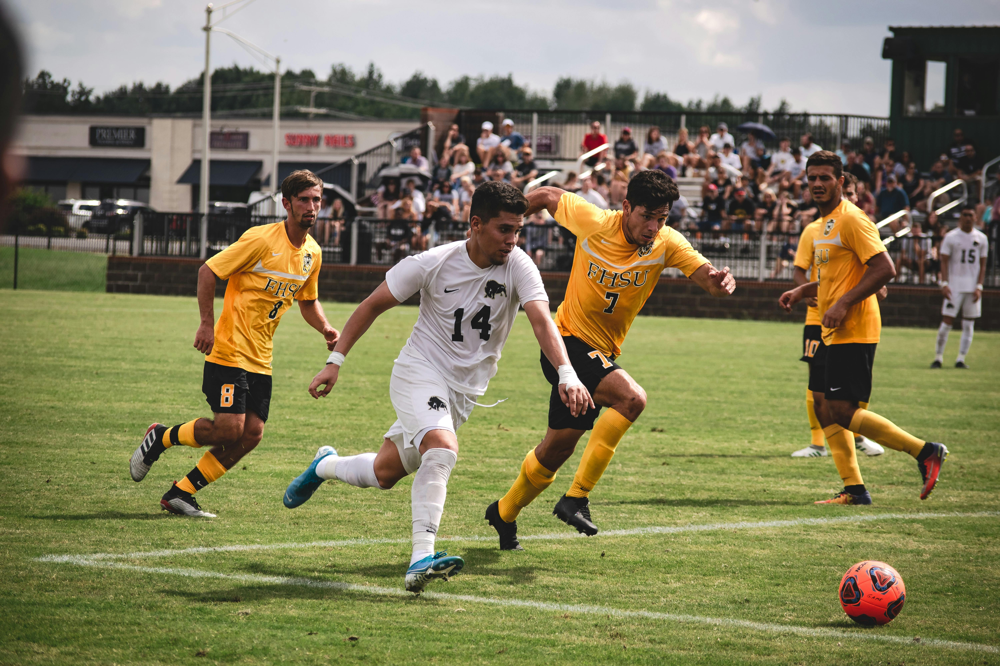

Legile jocului nu impun o altă poziție ocupată în teren de vreun jucător, în afara celei de portar. De-a lungul timpului au apărut o serie de poziții specifice. Acestea sunt: fundaș - jucător specializat în prevenirea încercărilor de a marca ale adversarilor; mijlocașul - jucător care organizează jocul ofensiv al echipei și oferă pase decisive atacanților; totodată el ajută apărătorii, încercând să oprească atacurile adverse încă de la început; atacantul - jucător al cărui principal rol este acela de a marca goluri. Aceste poziții sunt împărțite la rândul lor, după timpul petrecut de un jucător într-o anumită parte a terenului de joc. De exemplu, există fundași centrali sau mijlocași stânga. Aceste poziții nu sunt restricționate de reguli, iar fotbaliștii sunt liberi să-și schimbe pozițiile în timpul jocului. Acest lucru se aplică și portarilor, care, deși în marea majoritate a timpului se află în preajma propriei porți, pot participa oricând la jocul ofensiv al echipei. Cele mai întâlnite cazuri sunt la loviturile libere sau la cornere. Dispunerea jucătorilor pe teren se numește așezare tactică. Exemple de așezări tactice: 4-4-2 (4 fundași, 4 mijlocași, 2 atacanți); 4-5-1, 4-3-3 Stabilirea așezării tehnico-tactice a echipei intră în subordinea antrenorului.
